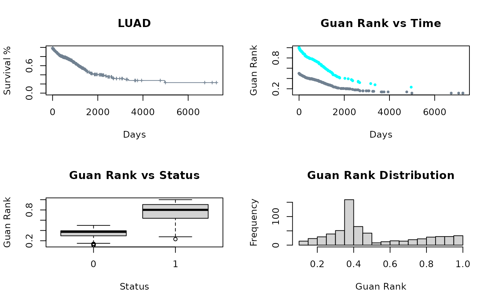

Simple version of GuanRank (https://www.nature.com/articles/s43588-021-00083-2)
Arguments
- surv_data
input should have two columns, the first column is time, the second is status an indicator with 0 = censored, 1 = event
Examples
dat <- UCSCXenaTools::getTCGAdata(project = 'LUAD', clinical = TRUE, download = TRUE)
#> This will check url status, please be patient.
#> All downloaded files will under directory /tmp/Rtmp5D7dPv.
#> The 'trans_slash' option is FALSE, keep same directory structure as Xena.
#> Creating directories for datasets...
#> Downloading TCGA.LUAD.sampleMap/LUAD_clinicalMatrix
clin <- data.table::fread(dat$destfiles, data.table = FALSE)
survData <- data.frame(
time = ifelse(!is.na(clin$days_to_last_followup),
as.numeric(clin$days_to_last_followup),
as.numeric(clin$days_to_death)),
status = dplyr::recode(
clin$vital_status, 'LIVING' = 0,'DECEASED' = 1, .default = NA_real_
)
)
gr <- calculate_guan_rank(surv_data = survData)
# Plotting code
Col <- as.vector(factor(gr$status, labels = c('slategrey', 'cyan')))
par(mfrow = c(2,2))
plot(survival::survfit(survival::Surv(gr$time, gr$status)~1), xlab = "Days",
ylab = "Survival %", conf.int = FALSE, mark.time = TRUE, col = "slategrey",
cex = .5, main = 'LUAD')
plot(gr$time,gr$guan_rank, pch = 19, col = Col, cex = .5, xlab = "Days",
ylab = "Guan Rank", main = "Guan Rank vs Time")
boxplot(gr$guan_rank ~ gr$status, xlab = "Status", ylab = "Guan Rank",
main = "Guan Rank vs Status")
hist(gr$guan_rank, breaks = 30, xlab = "Guan Rank",
main = "Guan Rank Distribution")
